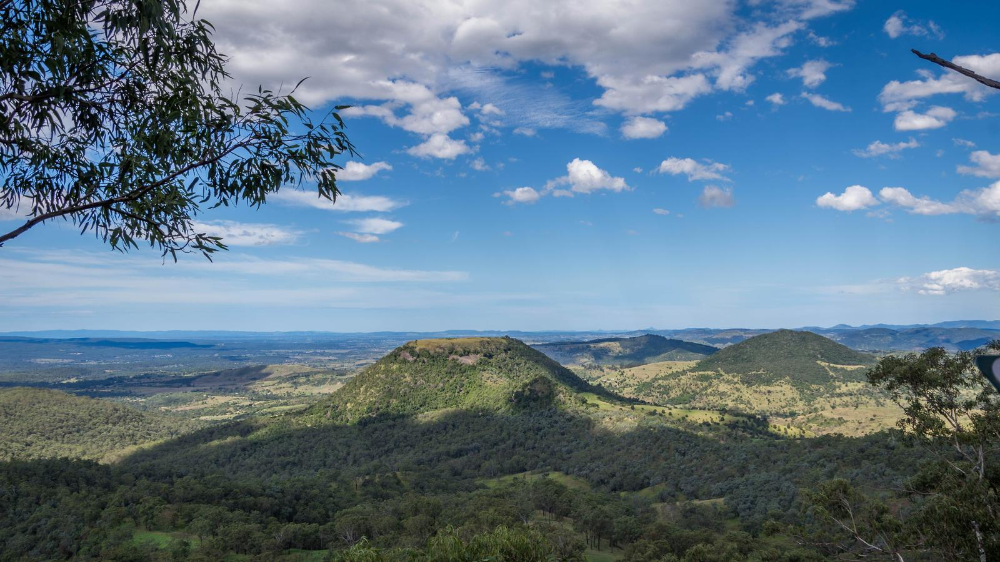
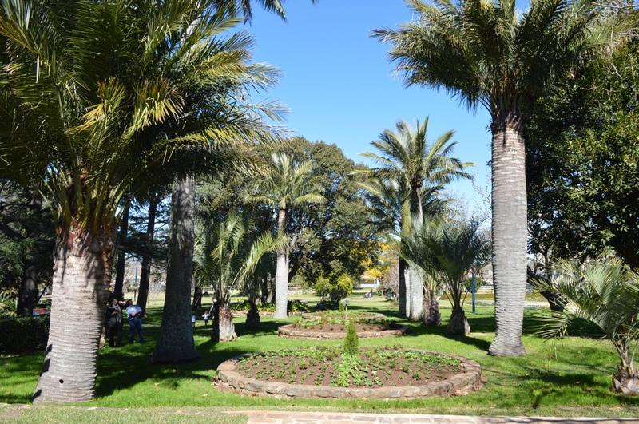
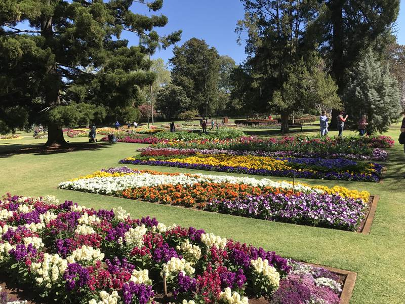
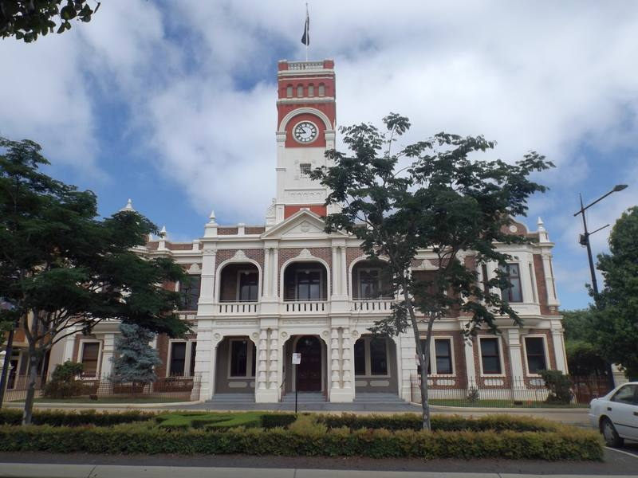

Toowoomba, Queensland
What's on in Toowoomba
Events, garage sales, and community notices from public listings. Nothing here is made up.
Things to do around Toowoomba
See allWalks, parks, lookouts and drives that are here all year. Each card links to the council, parkrun or Queensland Parks page.
This weekend

Laurel Bank Park
Garage sales
Date, suburb, and items from public listings.
144 upcoming listings in Toowoomba
- Term 4 2026: indelarts Toowoomba Film Class - Empire Theatre Tue, 6 Oct 2026, 1:00 am – Tue, 8 Dec, 2:30 pm · The Empire · Toowoomba City
- Bx Networking Toowoomba - Business Networking in Brisbane Wed, 28 Oct 2026, 8:00 am – 10:00 am · The Southern Hotel Toowoomba · Kearneys Spring
- DROP IN | Game Zone @ Toowoomba City Library Wed, 28 Oct 2026, 3:30 pm – 5:00 pm · Toowoomba City Library · Toowoomba City
- The Society for Tactical Regrets and Perilous Renewal Wed, 28 Oct 2026, 3:30 pm – 5:30 pm · 158 Margaret St · Toowoomba City
- Breast Cancer Fundraiser (Aura Glo x Blush Cancer Care) Wed, 28 Oct 2026, 5:00 pm · Aura Glo · Toowoomba City
- Toowoomba Data Centre and AI Risks Community Forum Wed, 28 Oct 2026, 5:30 pm – 7:30 pm · 615 Boundary St · Glenvale
- The Body Shop Toowoomba: The Feel-Good Gifting Event Wed, 28 Oct 2026, 6:00 pm – 7:30 pm · The Body Shop Toowoomba · Toowoomba City
- INTRO TO GROOV3: Toowoomba Wed, 28 Oct 2026, 6:15 pm – 7:15 pm · Belong Church · South Toowoomba
- Orava Quartet Thu, 29 Oct 2026 · The Empire · Toowoomba
- Care & Lifestyle Expo 2026 - Toowoomba Thu, 29 Oct 2026, 10:00 am – 1:00 pm · Highfields Cultural Centre · Highfields
- Make & Mend Afternoon Thu, 29 Oct 2026, 1:00 pm – 4:00 pm · USQ Library · Darling Heights
- The Write Time: Writers group Thu, 29 Oct 2026, 3:30 pm – 5:00 pm · New Leaf Social Work · Toowoomba City
- Kids Halloween Party Thu, 29 Oct 2026, 5:00 pm – 9:00 pm · Flipp'd · Toowoomba City
- Meet the Author: Fleur McDonald @ Toowoomba City Library Thu, 29 Oct 2026, 6:00 pm – 7:00 pm · Toowoomba City Library · Toowoomba City
- Toowoomba Paediatric Allied Health Professionals Networking - October Thu, 29 Oct 2026, 6:30 pm – 8:00 pm · MET Phys · Highfields
- Free Community English Class – Toowoomba Fri, 30 Oct 2026, 9:00 am – 10:30 am · Newtown State School · Toowoomba
- (Toowoomba) Morning Tea with the Vocational Coaching Team Fri, 30 Oct 2026, 10:00 am – 11:30 am · Carer Gateway Wellways Toowoomba · East Toowoomba
- Built on Foundations Fri, 30 Oct 2026, 12:00 pm – 3:00 pm · Toowoomba
- Free Community English Class – Toowoomba Fri, 30 Oct 2026, 1:30 pm – 2:30 pm · Harlaxton State School · Toowoomba
- Toowoomba's Favourite Sing-Along With Cassidy Rae - Deadly Divas Fri, 30 Oct 2026, 6:00 pm – 10:00 pm · Tonic Lounge & Bar · Toowoomba City
- AC/DC vs INXS by Candlelight | Toowoomba, QLD Fri, 30 Oct 2026, 8:00 pm – 9:00 pm · St Stephen's Toowoomba Uniting Church · Toowoomba City
- Brisbane Chamber Choir: Tides Of Ocean Sat, 31 Oct 2026 · The Empire · Toowoomba
- Hallo-Wiener Dachshund Racing Sat, 31 Oct 2026 · The Royal Hotel · Leyburn
- Highfields parkrun Sat, 31 Oct 2026, 7:00 am · Highfields Sports and Recreation Park · Highfields
- Toowoomba parkrun Sat, 31 Oct 2026, 7:00 am · Queens Park · East Toowoomba
- ABCDANCE Halloween Themed Mazes Sat, 31 Oct 2026, 4:00 pm – 10:00 pm · Oakey State High School · Oakey
- Permaculture Garden Tools: Choosing and Using Sun, 1 Nov 2026, 2:00 pm – 4:30 pm · Sarah Smith's Garden · Gowrie Junction
- Language Exchange Sun, 1 Nov 2026, 4:00 pm – 4:45 pm · New Hope · Toowoomba
- Toowoomba Inclusive Gay Speed Dating for Locals Sun, 1 Nov 2026, 7:00 pm – 8:00 pm · 3 Elizabeth St · Toowoomba
- Feelings In Focus: Creating Your Emotional Toolkit Mon, 2 Nov 2026, 10:00 am – 12:00 pm · Wellways Toowoomba · East Toowoomba
- Goodstart Highfields Twilight Tour Mon, 2 Nov 2026, 6:30 pm – 7:30 pm · Goodstart Early Learning Highfields · Highfields
- TOOWOOMBA Supercharge Your Student Supervision Skills - Full Day Workshop Tue, 3 Nov 2026, 8:30 am – 4:30 pm · Southern Queensland Rural Health Toowoomba (SQRH) · Toowoomba
- Talk, Read, Sing, Play in the Community — 1a Birch Court Park, Darling Heights Tue, 3 Nov 2026, 10:00 am – 11:00 am · 1a Birch Court Park, Darling Heights · Darling Heights
- Toowoomba, QLD - Starts at 60 Meetup Tue, 3 Nov 2026, 10:00 am – 12:00 pm · Muffin Break Grand Central · Toowoomba City
- Melbourne Cup @ Tatts Hotel | Food & Beverage Package Tue, 3 Nov 2026, 11:00 am – 2:30 pm · Tatts Hotel · Toowoomba City
- Line Dancing: Fortnightly Boot Scootin' Tue, 3 Nov 2026, 6:00 pm – 7:30 pm · Aberfeldy Barn · Toowoomba
- Bx Networking Pittsworth Breakfast - Business Networking in Pittsworth Wed, 4 Nov 2026, 8:00 am – 10:00 am · 59 Yandilla St · Pittsworth
- Read + Play — Millmerran Library Wed, 4 Nov 2026, 10:00 am – 10:30 am · Millmerran Library · Millmerran
- Liven Carabella Information Session Wed, 4 Nov 2026, 10:30 am – 12:00 pm · Toowoomba Sports Club · Toowoomba City
- BxNetworking Highfields - Business Networking Reimagined in Queensland Thu, 5 Nov 2026, 8:00 am – 10:00 am · Savour This Eatery · Highfields
- TOOWOOMBA Master Your Supervision Skills Workshop - Full Day Workshop Thu, 5 Nov 2026, 8:30 am – 4:30 pm · Southern Queensland Rural Health Toowoomba (SQRH) · Toowoomba
- Queensland Regional Disability Conference 2026 - Toowoomba Thu, 5 Nov 2026, 9:30 am – 4:30 pm · Toowoomba City Hall - The Annex, Auditorium · Toowoomba City
- Read + Play — Clifton Library Thu, 5 Nov 2026, 10:00 am – 10:30 am · Clifton Library · Clifton
- Windy Acres Beekeeping Workshop Thu, 5 Nov 2026, 10:00 am – 1:00 pm · Goombungee Library · Goombungee
- • QLD 2 Carers; The Mindful Stitching Project (Toowoomba) Thu, 5 Nov 2026, 12:00 pm – 1:30 pm · Wellways Toowoomba · East Toowoomba
- Common Good Convention - Toowoomba Thu, 5 Nov 2026, 6:00 pm – 8:30 pm · To be announced, Toowoomba · Toowoomba
- Let's meetup to share and learn more about WordPress Thu, 5 Nov 2026, 6:00 pm – 8:00 pm · 2 Derwak St · Harristown
- Master Builders BUSSQ Downs & Western Golf Day Fri, 6 Nov 2026, 7:00 am – 3:30 pm · Toowoomba Golf Club Middle Ridge · Middle Ridge
- DROP IN | Bikkies and Boardgames Fri, 6 Nov 2026, 10:00 am – 12:00 pm · Toowoomba City Library · Toowoomba City
- Read + Play — Cecil Plains Library Fri, 6 Nov 2026, 10:00 am – 10:30 am · Cecil Plains Library · Cecil Plains
- Talk, Read, Sing, Play in the Community — Harlaxton Hub Fri, 6 Nov 2026, 10:00 am – 11:00 am · Harlaxton Hub · Harlaxton
- RAMAYANA – PART 1 Multilingual Movie Screening (Deepavali special) Fri, 6 Nov 2026, 6:00 pm · Strand Theatre (Toowoomba 5 Cinema) · Toowoomba City
- Adnate, Wizard Eyes, Light Eater - Irish Club, Toowoomba - $20 Fri, 6 Nov 2026, 7:00 pm – 11:30 pm · The Irish · Toowoomba City
- ✨ JASHAN-E DIWALI 2.0 ✨ Fri, 6 Nov 2026, 9:00 pm – Sat, 7 Nov, 3:00 am · The Cube Hotel · Toowoomba City
- Car Boot Sale (Follow the Star fundraiser) Sat, 7 Nov 2026, 8:00 am – 12:00 pm · Living Grace Church · Toowoomba
- Baby Bunting Toowoomba: Grand Reopening Celebration Weekend | Free Event Sat, 7 Nov 2026, 9:00 am – Sun, 8 Nov, 5:00 pm · Baby Bunting Toowoomba · Harristown
- Lockyer Valley Art Society Pottery & Art Sale Sat, 7 Nov 2026, 9:00 am – 4:00 pm · Lockyer Valley Art Society
- Nationally Accredited First Aid Training Sat, 7 Nov 2026, 9:00 am – 12:00 pm · 2 Lawrence St · South Toowoomba
- Fun Factory: Paper Zoo Sat, 7 Nov 2026, 10:30 am – 12:00 pm · Toowoomba City Library · Toowoomba City
- Mime Show & Workshop with James Kerwin Sat, 7 Nov 2026, 10:30 am – 11:30 am · Highfields Library · Highfields
- $5* Bowls & Burgers! South Seoul Toowoomba @ Northpoint Shopping Centre. Sat, 7 Nov 2026, 11:00 am – 5:00 pm · Northpoint Shopping Centre · Toowoomba City
- Dance your way to peace Sat, 7 Nov 2026, 12:00 pm – 1:00 pm · Toowoomba City Library · Toowoomba City
- Justice for John cent sale Sat, 7 Nov 2026, 12:00 pm · QCWA Hall · Toowoomba City
- Games on the Green & Good Company Sat, 7 Nov 2026, 4:00 pm – 6:30 pm · Queens Park Toowoomba · East Toowoomba
- TGW and Smithy Bring the Big Fights 44 Sat, 7 Nov 2026, 4:00 pm – 11:00 pm · Rumours International · Toowoomba City
- Monster Truck Mayhem Thrill & Stunt Show Toowoomba Showgrounds Sat, 7 Nov 2026, 5:00 pm – 7:00 pm · Toowoomba Showgrounds · Glenvale
- Toowoomba Ecstatic Dance - Awaken the Spirit Within Sat, 7 Nov 2026, 6:00 pm – 8:00 pm · Drayton Memorial Hall · Drayton
- Sparks Fly Singles Only Lawn Bowls - Club Toowoomba Sun, 8 Nov 2026, 3:00 pm – 5:30 pm · Club Toowoomba · South Toowoomba
- Sparks Fly Singles Only Lawn Bowls - Toowoomba Sun, 8 Nov 2026, 3:00 pm – 5:00 pm · Club Toowoomba · South Toowoomba
- Key Word Sign Workshop for Parents - Toowoomba Mon, 9 Nov 2026, 4:00 pm – 6:00 pm · Toowoomba City Library · Toowoomba City
- Qld Major Projects Pipeline Report: Toowoomba - 10 November 2026 Tue, 10 Nov 2026, 7:00 am – 9:00 am · Oaks Hotel · Toowoomba
- UniSQ Library Book Club Tue, 10 Nov 2026, 1:00 pm – 2:00 pm · USQ Library · Darling Heights
- Key Word Sign Workshop for Educators - Toowoomba Tue, 10 Nov 2026, 3:30 pm – 5:30 pm · St Anthony's School · Harristown
- First Aid for Educators - IN SERVICE ONLY - The Funberry Kids Childcare Tue, 10 Nov 2026, 4:00 pm – 7:00 pm · Kath Dickson Education and Care Centre - Toowoomba Central · Toowoomba City
- Come and Try Pickleball Tue, 10 Nov 2026, 6:00 pm · Concordia College Gym · Harristown
- Talk, Read, Sing, Play in the Community — Newtown Community Hub Thu, 12 Nov 2026, 9:30 am – 10:00 am · Newtown Community Hub · Newtown
- Rural and Regional Practice Management Essentials Thu, 12 Nov 2026, 5:00 pm – 7:00 pm · 190 Hume St · Toowoomba City
- Welcoming Australia Summit Series, Toowoomba Fri, 13 Nov 2026, 9:30 am – 4:00 pm · The Annex, City Hall Building · Toowoomba City
- Powerpoint Party Fri, 13 Nov 2026, 5:00 pm – 7:30 pm · New Leaf Social Work · Toowoomba City
- Bangarra Dance Theatre: Horizon Sat, 14 Nov 2026 · The Empire · Toowoomba
- Love without pain (Workshop) Toowoomba - 14 November 2026 Sat, 14 Nov 2026, 10:00 am – 2:30 pm · Toowoomba City Library · Toowoomba City
- Connect and Learn - Preserving Produce: Zucchinis 10 Ways Mon, 16 Nov 2026, 6:30 pm – 8:30 pm · Level 3 Meeting Rooms, Toowoomba City Library · Toowoomba City
- Read + Play — Yarraman Library Tue, 17 Nov 2026, 10:15 am – 10:45 am · Yarraman Library · Yarraman
- Future of Women in Business - Toowoomba Tue, 17 Nov 2026, 12:00 pm – 2:00 pm · Burke & Wills Hotel · Toowoomba City
- Read + Play — Millmerran Library Wed, 18 Nov 2026, 10:00 am – 10:30 am · Millmerran Library · Millmerran
- A Fireside Chat with Lachlan Stuart Wed, 18 Nov 2026, 5:30 pm – 7:30 pm · Clifford House, Toowoomba · Toowoomba City
- Australian citizenship ceremony Thu, 19 Nov 2026, 10:00 am · The Annex, 541 Ruthven Street Toowoomba City · Toowoomba City
- Read + Play — Clifton Library Thu, 19 Nov 2026, 10:00 am – 10:30 am · Clifton Library · Clifton
- Australian citizenship ceremony Thu, 19 Nov 2026, 2:00 pm · The Annex, 541 Ruthven Street Toowoomba City · Toowoomba City
- Nourish & Nurture Retreat Fri, 20 Nov 2026 · Bohemia Retreat · Crows Nest
- UniSQ National Agriculture Day 2026 Fri, 20 Nov 2026, 9:00 am – 2:30 pm · University of Southern Queensland · Darling Heights
- Meet, Make, and Do @ Toowoomba City Library Fri, 20 Nov 2026, 10:00 am – 12:00 pm · Toowoomba City Library · Toowoomba City
- Read + Play — Cecil Plains Library Fri, 20 Nov 2026, 10:00 am – 10:30 am · Cecil Plains Library · Cecil Plains
- Reading Journal Workshop @ Toowoomba City Library Sat, 21 Nov 2026, 10:30 am – 12:30 pm · Toowoomba City Library · Toowoomba City
- Toowoomba’s Endless Edit - Sunday 22nd NOVEMBER, 2026 Sun, 22 Nov 2026, 8:00 am – 12:00 pm · Toowoomba Indoor Bowls Hall · Toowoomba City
- Deluxe Floral Cupcake Class (Toowoomba) Sun, 22 Nov 2026, 10:00 am – 1:00 pm · 10 Tristania St · Drayton
- Sound Meditation - Pittsworth Sun, 22 Nov 2026, 5:00 pm – 6:00 pm · 13 Briggs St · Pittsworth
- Art for the Ocean (Sea Shepherd Toowoomba Fundraiser) Mon, 23 Nov 2026, 4:00 pm – 6:00 pm · The Milk House Collective · North Toowoomba
- 2026 QLD Roadshow - Toowoomba Wed, 25 Nov 2026, 9:00 am – 12:00 pm · Oaks Toowoomba Hotel · Toowoomba City
- 2026 SCOTS PGC College Foundation Toowoomba Luncheon Wed, 25 Nov 2026, 11:30 am – 3:00 pm · Picnic Point Toowoomba · Toowoomba City
- Stronger Together: NDIS Roundtable – Toowoomba Thu, 26 Nov 2026, 10:00 am – 12:30 pm · Toowoomba City Library · Toowoomba City
- Contiki Summer Series: Toowoomba, QLD Thu, 26 Nov 2026, 6:00 pm – 9:00 pm · BCC Cinemas Toowoomba Strand · Toowoomba City
- Mickey Wilson - How Ya Goin? | Toowoomba Stand Up Comedy Show Fri, 27 Nov 2026, 7:30 pm – 8:30 pm · The Irish · Toowoomba City
- Cruise For Kids 2026 Family-friendly Motor Vehicle Show & Shine and Community Cruise Registration Sat, 28 Nov 2026, 10:00 am – 4:00 pm · Toowoomba Showgrounds · Glenvale
- Cruise For Kids 2026 Family-Friendly Motor Vehicle Show & Shine/Fun Day Sat, 28 Nov 2026, 10:00 am – 4:00 pm · Toowoomba Showgrounds · Glenvale
- Rnb 90s - 2000s Before Dark Sat, 28 Nov 2026, 4:00 pm – 9:00 pm · Cube Hotel · Toowoomba
- Gong Sound Experience Toowoomba – Live Gong Meditation & Chai Sat, 28 Nov 2026, 6:30 pm – 8:00 pm · Groom Park Hall · Toowoomba
- Live & Local @ The Powerhouse ! November 28th! Sat, 28 Nov 2026, 6:30 pm – 10:00 pm · The Powerhouse Toowoomba · Toowoomba City
- Talk, Read, Sing, Play in the Community — 1a Birch Court Park, Darling Heights Tue, 1 Dec 2026, 10:00 am – 11:00 am · 1a Birch Court Park, Darling Heights · Darling Heights
- Toowoomba, QLD - Starts at 60 Meetup Tue, 1 Dec 2026, 10:00 am – 12:00 pm · Muffin Break Grand Central · Toowoomba City
- Queensland Police Service Recruiting Seminar - Toowoomba Tue, 1 Dec 2026, 5:30 pm – 7:00 pm · 52 Neil St · Toowoomba City
- Read + Play — Millmerran Library Wed, 2 Dec 2026, 10:00 am – 10:30 am · Millmerran Library · Millmerran
- Read + Play — Clifton Library Thu, 3 Dec 2026, 10:00 am – 10:30 am · Clifton Library · Clifton
- Read + Play — Cecil Plains Library Fri, 4 Dec 2026, 10:00 am – 10:30 am · Cecil Plains Library · Cecil Plains
- Talk, Read, Sing, Play in the Community — Harlaxton Hub Fri, 4 Dec 2026, 10:00 am – 11:00 am · Harlaxton Hub · Harlaxton
- Sparks Fly Singles Only Bowling - Toowoomba Fri, 4 Dec 2026, 6:30 pm – 9:00 pm · Sunset Superbowl · Glenvale
- toowoomba queer social ★ 18+ prom night Sat, 5 Dec 2026, 5:00 pm – 11:00 pm · Greek Hall @ 240 Hume Street · South Toowoomba
- Fa La La La Flaws: An Ugly Christmas Shirt Mingle Sat, 5 Dec 2026, 6:30 pm – 10:00 pm · The Rock · Toowoomba City
- Liam Higgins - Love Is A Language Tour - Toowoomba Sat, 5 Dec 2026, 7:00 pm – 11:00 pm · Volcanic Brewing · Toowoomba City
- Patrick James - Live In Concert - GROOM PARK HALL, TOOWOOMBA Thu, 10 Dec 2026, 7:00 pm – 8:30 pm · Groom Park Hall · South Toowoomba
- Craft Market Jamboree Sat, 12 Dec 2026, 6:30 am – 12:00 pm · The Milk House Collective · North Toowoomba
- Turkish Coffee & Ceramic Painting Workshop - Toowoomba Sat, 12 Dec 2026, 9:00 am – 11:00 am · Middle Ridge Uniting Church · Centenary Heights
- Christmas of Remembrance Service - Toowoomba Sun, 13 Dec 2026, 2:00 pm – 4:00 pm · Toowoomba Garden of Remembrance · Kearneys Spring
- Mantra Rhythm - Toowoomba Sun, 13 Dec 2026, 4:00 pm – 5:30 pm · Clive Berghofer Recreation Centre · Darling Heights
- Read + Play — Yarraman Library Tue, 15 Dec 2026, 10:15 am – 10:45 am · Yarraman Library · Yarraman
- Build a Bot 2 Day Workshop Thu, 17 Dec 2026, 9:00 am – Fri, 18 Dec, 3:00 pm · USQ Library · Darling Heights
- Read + Play — Clifton Library Thu, 17 Dec 2026, 10:00 am – 10:30 am · Clifton Library · Clifton
- Jondaryan Christmas Markets Sat, 19 Dec 2026, 9:00 am · Jondaryan Community Hall · Jondaryan
- Community Christmas Carols Sun, 20 Dec 2026, 4:00 pm · Highfields Cultural Centre · Highfields
- NYE Charity Casino Night Thu, 31 Dec 2026, 7:00 pm – 11:30 pm · Rink 46 home of Drayton Bowls Club · Drayton
- Toowoomba, QLD - Starts at 60 Meetup Tue, 5 Jan 2027, 10:00 am – 12:00 pm · Muffin Break Grand Central · Toowoomba City
- Read + Play — Clifton Library Thu, 14 Jan 2027, 10:00 am – 10:30 am · Clifton Library · Clifton
- Read + Play — Yarraman Library Tue, 19 Jan 2027, 10:15 am – 10:45 am · Yarraman Library · Yarraman
- Toowoomba, QLD - Starts at 60 Meetup Tue, 2 Feb 2027, 10:00 am – 12:00 pm · Muffin Break Grand Central · Toowoomba City
- Navigating Grants and Incentives: Unlocking Manufacturing Growth, Toowoomba Wed, 3 Feb 2027, 11:30 am – 2:30 pm · Toowoomba City Library · Toowoomba City
- Your Local Wedding Guide Toowoomba Expo - 7th February 2027 Sun, 7 Feb 2027, 10:00 am – 2:00 pm · The Goods Shed Toowoomba · Toowoomba City
- ACORN Qld Regional Education Day - Toowoomba Sat, 27 Feb 2027, 8:00 am – 3:30 pm · St Vincents Hospital Clinical School, Level 2, 22 Scott Street, Toowoomba · East Toowoomba
- ACORN Qld Regional Education Day 2027 - Toowoomba Sat, 27 Feb 2027, 8:00 am – 3:30 pm · St Vincent's Hospital Clinical School · East Toowoomba
- The Athlete & The Alchemist Breathwork Journey | Toowoomba Sun, 28 Feb 2027, 4:00 pm – 6:00 pm · Newtown Hall · Newtown
- Toowoomba, QLD - Starts at 60 Meetup Tue, 2 Mar 2027, 10:00 am – 12:00 pm · Muffin Break Grand Central · Toowoomba City
- Toowoomba, QLD - Starts at 60 Meetup Tue, 6 Apr 2027, 10:00 am – 12:00 pm · Muffin Break Grand Central · Toowoomba City
- Neil Diamond musical 'A Beautiful Noise' day trip Thu, 15 Apr 2027, 10:00 am – 6:00 pm · Discovery Coaches · Toowoomba City
- Open Heavens - Rich in Life! Sat, 1 May 2027, 4:00 pm – 8:30 pm · 311 Cooby Dam Rd · Meringandan
- Toowoomba, QLD - Starts at 60 Meetup Tue, 4 May 2027, 10:00 am – 12:00 pm · Muffin Break Grand Central · Toowoomba City
In the city
Queens Park in flower, and City Hall on the edge of the centre.


Find what's on
Looking for what's on in Toowoomba? Start with events this weekend, garage sales, or things to do, including Toowoomba parkrun.